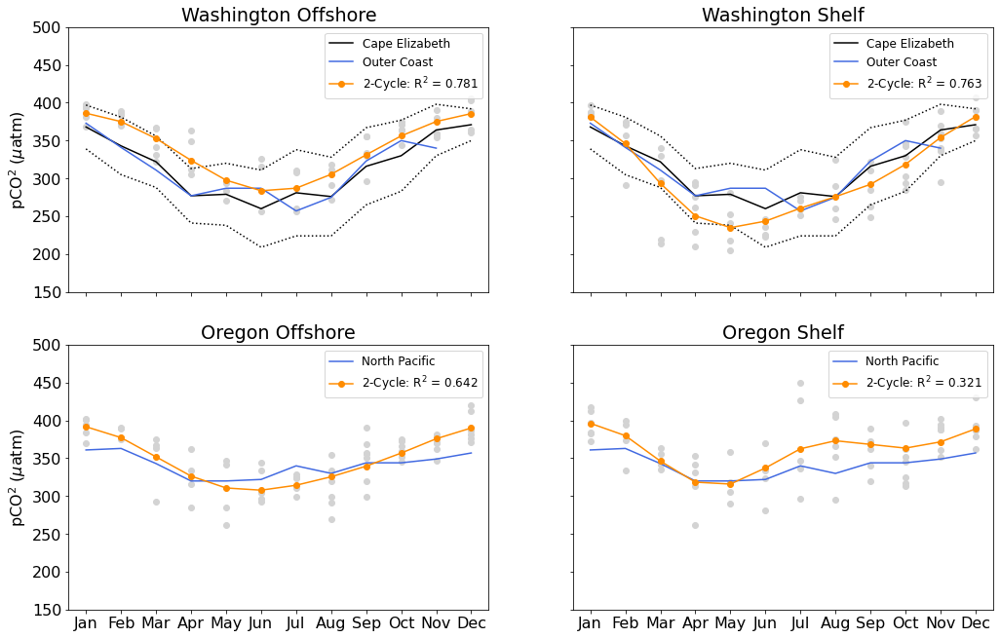
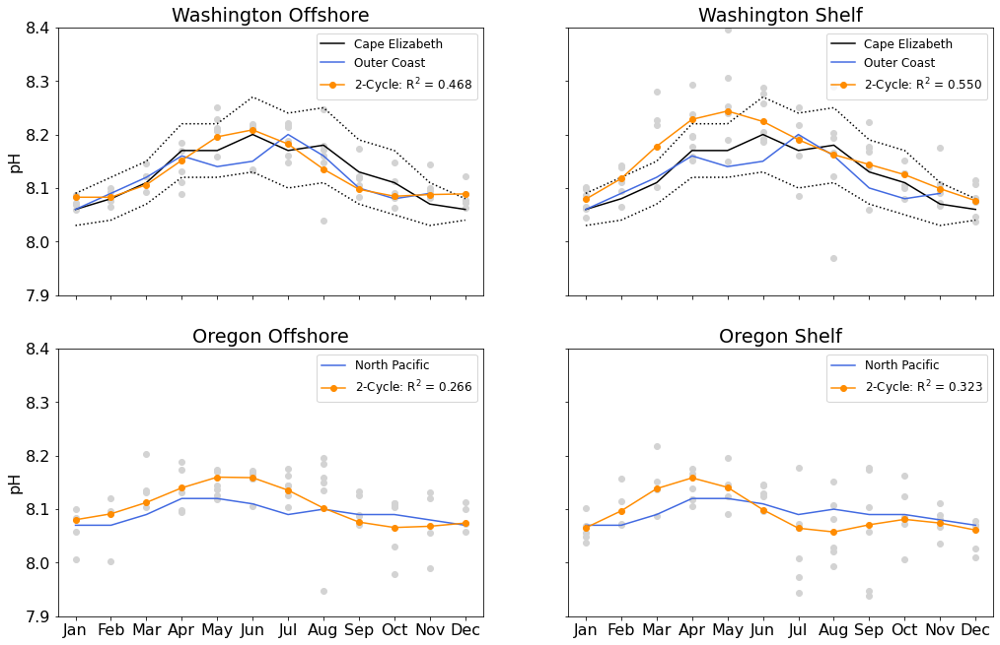

Carbonate Climatologies Using PCO2a Sensor Data#
import matplotlib.pyplot as plt
import numpy as np
import os
import time
import xarray as xr
from ooi_data_explorations.common import get_annotations, load_gc_thredds, add_annotation_qc_flags
from ooi_data_explorations.combine_data import combine_datasets
from ooi_data_explorations.uncabled.process_pco2a import pco2a_datalogger
from ooi_data_explorations.uncabled.process_phsen import phsen_datalogger, phsen_instrument
import warnings
warnings.simplefilter(action='ignore', category=FutureWarning)
from ooi_data_explorations.qartod.climatology import Climatology
clm = Climatology()
def merge_pco2a(site, node, sensor):
"""
Download the PCO2A water measurement data files from the OOI Gold Copy
THREDDS server, combine the data from the two different data delivery
methods, and median average the data into daily averages.
"""
# set the stream names and the regex tag to use to select the data files of interest
tstream = 'pco2a_a_dcl_instrument_water'
rstream = 'pco2a_a_dcl_instrument_water_recovered'
tag = '.*PCO2A.*water.*\\.nc$'
# download annotations associated with this site
annotations = get_annotations(site, node, sensor)
# download the telemetered data and re-process it to create a more useful and coherent data set
print('### -- Downloading the telemetered data')
telem = load_gc_thredds(site, node, sensor, 'telemetered', tstream, tag)
telem = pco2a_datalogger(telem)
# download the recovered host data and re-process it to create a more useful and coherent data set
print('### -- Downloading the recovered_host data')
rhost = load_gc_thredds(site, node, sensor, 'recovered_host', rstream, tag)
rhost = pco2a_datalogger(rhost)
# create a roll-up annotation flag
telem = add_annotation_qc_flags(telem, annotations)
rhost = add_annotation_qc_flags(rhost, annotations)
# clean-up the data, removing values that are marked as suspect or fail in the annotations
telem = telem.where((telem.partial_pressure_co2_ssw_annotations_qc_results < 3) &
(telem.rollup_annotations_qc_results < 3))
rhost = rhost.where((rhost.partial_pressure_co2_ssw_annotations_qc_results < 3) &
(rhost.rollup_annotations_qc_results < 3))
# combine the two datasets into a single, merged time series resampled to daily median averages
merged = combine_datasets(telem, rhost, None, 1440)
return merged
def merge_phsen(site, node, sensor):
"""
Download the PHSEN data files from the OOI Gold Copy THREDDS server, combine
the data from the three different data delivery methods, and median average
the data into daily averages.
"""
# download annotations associated with this site
annotations = get_annotations(site, node, sensor)
tag = '.*PHSEN.*\\.nc$'
print('### -- Downloading the telemetered data')
telem = load_gc_thredds(site, node, sensor, 'telemetered', 'phsen_abcdef_dcl_instrument', tag)
telem = phsen_datalogger(telem)
# download the recovered host data and re-process it to create a more useful and coherent data set
print('### -- Downloading the recovered_host data')
rhost = load_gc_thredds(site, node, sensor, 'recovered_host', 'phsen_abcdef_dcl_instrument_recovered', tag)
rhost = phsen_datalogger(rhost)
# download the recovered instrument data and re-process it to create a more useful and coherent data set
print('### -- Downloading the recovered_inst data')
rinst = load_gc_thredds(site, node, sensor, 'recovered_inst', 'phsen_abcdef_instrument', tag)
rinst = phsen_instrument(rinst)
# create a roll-up annotation flag
telem = add_annotation_qc_flags(telem, annotations)
rhost = add_annotation_qc_flags(rhost, annotations)
rinst = add_annotation_qc_flags(rinst, annotations)
# clean-up the data, removing values that fail the pH quality checks or were marked as fail in the annotations
telem = telem.where((telem.seawater_ph_quality_flag != 4) & (telem.rollup_annotations_qc_results != 4))
rhost = rhost.where((rhost.seawater_ph_quality_flag != 4) & (rhost.rollup_annotations_qc_results != 4))
rinst = rinst.where((rinst.seawater_ph_quality_flag != 4) & (rinst.rollup_annotations_qc_results != 4))
# combine the three datasets into a single, merged time series resampled to daily median averages
merged = combine_datasets(telem, rhost, rinst, 1440)
return merged
Download and merge data#
Download the pco2a and phsen data from the 4 Endurance array Coastal Surface Moorings, merging the data from the different data delivery methods and saving the results to disk for further analysis.
sites = ['CE02SHSM', 'CE04OSSM', 'CE07SHSM', 'CE09OSSM']
pco2a = []
phsen = []
for num, site in enumerate(sites):
# save the PCO2A data to local files in the home directory under ooidata
pco2_path = os.path.join(os.path.expanduser('~'), 'ooidata/%s/buoy/pco2a' % site.lower())
if not os.path.exists(pco2_path):
os.makedirs(pco2_path)
pco2a_file = os.path.join(pco2_path, '%s.pco2a.merged.nc' % site.lower())
# save the PHSEN data to local files in the home directory under ooidata
ph_path = os.path.join(os.path.expanduser('~'), 'ooidata/%s/nsif/phsen' % site.lower())
if not os.path.exists(ph_path):
os.makedirs(ph_path)
phsen_file = os.path.join(ph_path, '%s.phsen.merged.nc' % site.lower())
# download the data, or ...
print('### Downloading the PCO2A data from %s ###' % site)
pco2a.append(merge_pco2a(site, 'SBD12', '04-PCO2AA000'))
pco2a[num].to_netcdf(pco2a_file, mode='w', format='NETCDF4') #, engine='h5netcdf')
time.sleep(10) # pause, the THREDDS server doesn't like getting hammered
print('### Downloading the PHSEN data from %s ###' % site)
phsen.append(merge_phsen(site, 'RID26', '06-PHSEND000'))
phsen[num].to_netcdf(phsen_file, mode='w', format='NETCDF4')#, engine='h5netcdf')
time.sleep(10) # pause, the THREDDS server doesn't like getting hammered
# ... load the already downloaded data
# pco2a.append(xr.load_dataset(pco2a_file))
# phsen.append(xr.load_dataset(phsen_file))
### Downloading the PCO2A data from CE02SHSM ###
### -- Downloading the telemetered data
Downloading 740 data file(s) from the OOI Gold Copy THREDSS catalog
Downloading and Processing the Data Files: 0%| | 0/740 [00:00<?, ?it/s]
Downloading and Processing the Data Files: 0%|▎ | 1/740 [00:00<10:12, 1.21it/s]
Downloading and Processing the Data Files: 1%|███▏ | 11/740 [00:01<01:33, 7.79it/s]
Downloading and Processing the Data Files: 3%|██████ | 21/740 [00:02<00:56, 12.82it/s]
Downloading and Processing the Data Files: 3%|██████▉ | 24/740 [00:02<00:49, 14.37it/s]
Downloading and Processing the Data Files: 4%|████████▉ | 31/740 [00:02<00:49, 14.34it/s]
Downloading and Processing the Data Files: 4%|█████████▍ | 33/740 [00:02<00:47, 14.75it/s]
Downloading and Processing the Data Files: 6%|███████████▊ | 41/740 [00:03<00:46, 14.99it/s]
Downloading and Processing the Data Files: 6%|████████████▋ | 44/740 [00:03<00:42, 16.50it/s]
Downloading and Processing the Data Files: 7%|██████████████▋ | 51/740 [00:03<00:44, 15.60it/s]
Downloading and Processing the Data Files: 7%|███████████████▎ | 53/740 [00:04<00:45, 15.13it/s]
Downloading and Processing the Data Files: 8%|████████████████▉ | 59/740 [00:04<00:32, 20.90it/s]
Downloading and Processing the Data Files: 8%|█████████████████▊ | 62/740 [00:04<00:44, 15.17it/s]
Downloading and Processing the Data Files: 9%|███████████████████▌ | 68/740 [00:04<00:32, 20.72it/s]
Downloading and Processing the Data Files: 10%|████████████████████▋ | 72/740 [00:05<00:45, 14.84it/s]
Downloading and Processing the Data Files: 10%|█████████████████████▌ | 75/740 [00:05<00:40, 16.60it/s]
Downloading and Processing the Data Files: 11%|███████████████████████ | 80/740 [00:05<00:41, 15.95it/s]
Downloading and Processing the Data Files: 11%|███████████████████████▉ | 83/740 [00:05<00:42, 15.41it/s]
Downloading and Processing the Data Files: 12%|█████████████████████████▉ | 90/740 [00:06<00:43, 14.79it/s]
Downloading and Processing the Data Files: 12%|██████████████████████████▍ | 92/740 [00:06<00:43, 14.76it/s]
Downloading and Processing the Data Files: 14%|████████████████████████████▋ | 100/740 [00:06<00:38, 16.46it/s]
Downloading and Processing the Data Files: 14%|█████████████████████████████▏ | 102/740 [00:07<00:41, 15.30it/s]
Downloading and Processing the Data Files: 15%|███████████████████████████████▌ | 110/740 [00:07<00:37, 16.60it/s]
Downloading and Processing the Data Files: 15%|████████████████████████████████ | 112/740 [00:07<00:38, 16.27it/s]
Downloading and Processing the Data Files: 16%|██████████████████████████████████ | 119/740 [00:07<00:26, 23.54it/s]
Downloading and Processing the Data Files: 17%|███████████████████████████████████▏ | 123/740 [00:08<00:39, 15.70it/s]
Downloading and Processing the Data Files: 17%|████████████████████████████████████▉ | 129/740 [00:08<00:33, 18.31it/s]
Downloading and Processing the Data Files: 18%|█████████████████████████████████████▊ | 132/740 [00:08<00:41, 14.74it/s]
Downloading and Processing the Data Files: 19%|███████████████████████████████████████▊ | 139/740 [00:09<00:36, 16.59it/s]
Downloading and Processing the Data Files: 19%|████████████████████████████████████████▋ | 142/740 [00:09<00:40, 14.80it/s]
Downloading and Processing the Data Files: 20%|██████████████████████████████████████████▋ | 149/740 [00:09<00:38, 15.39it/s]
Downloading and Processing the Data Files: 20%|███████████████████████████████████████████▎ | 151/740 [00:09<00:38, 15.48it/s]
Downloading and Processing the Data Files: 21%|████████████████████████████████████████████▍ | 155/740 [00:10<00:32, 17.93it/s]
Downloading and Processing the Data Files: 21%|█████████████████████████████████████████████▌ | 159/740 [00:10<00:36, 15.80it/s]
Downloading and Processing the Data Files: 22%|██████████████████████████████████████████████ | 161/740 [00:10<00:36, 15.71it/s]
Downloading and Processing the Data Files: 22%|███████████████████████████████████████████████▎ | 165/740 [00:10<00:30, 18.88it/s]
Downloading and Processing the Data Files: 23%|████████████████████████████████████████████████▍ | 169/740 [00:11<00:35, 15.93it/s]
Downloading and Processing the Data Files: 23%|████████████████████████████████████████████████▉ | 171/740 [00:11<00:38, 14.83it/s]
Downloading and Processing the Data Files: 24%|██████████████████████████████████████████████████▋ | 177/740 [00:11<00:25, 21.89it/s]
Downloading and Processing the Data Files: 24%|███████████████████████████████████████████████████▌ | 180/740 [00:11<00:40, 13.86it/s]
Downloading and Processing the Data Files: 25%|████████████████████████████████████████████████████▋ | 184/740 [00:12<00:37, 14.75it/s]
Downloading and Processing the Data Files: 26%|██████████████████████████████████████████████████████▏ | 189/740 [00:12<00:32, 17.13it/s]
Downloading and Processing the Data Files: 26%|███████████████████████████████████████████████████████ | 192/740 [00:12<00:33, 16.57it/s]
Downloading and Processing the Data Files: 26%|███████████████████████████████████████████████████████▌ | 194/740 [00:12<00:33, 16.11it/s]
Downloading and Processing the Data Files: 27%|████████████████████████████████████████████████████████▋ | 198/740 [00:12<00:31, 17.07it/s]
Downloading and Processing the Data Files: 27%|█████████████████████████████████████████████████████████▎ | 200/740 [00:12<00:36, 14.82it/s]
Downloading and Processing the Data Files: 28%|██████████████████████████████████████████████████████████▍ | 204/740 [00:13<00:29, 17.89it/s]
Downloading and Processing the Data Files: 28%|███████████████████████████████████████████████████████████ | 206/740 [00:13<00:29, 18.05it/s]
Downloading and Processing the Data Files: 28%|███████████████████████████████████████████████████████████▌ | 208/740 [00:13<00:41, 12.93it/s]
Downloading and Processing the Data Files: 29%|█████████████████████████████████████████████████████████████ | 213/740 [00:13<00:28, 18.41it/s]
Downloading and Processing the Data Files: 29%|█████████████████████████████████████████████████████████████▉ | 216/740 [00:13<00:28, 18.64it/s]
Downloading and Processing the Data Files: 30%|██████████████████████████████████████████████████████████████▋ | 219/740 [00:14<00:41, 12.65it/s]
Downloading and Processing the Data Files: 30%|████████████████████████████████████████████████████████████████▏ | 224/740 [00:14<00:28, 18.07it/s]
Downloading and Processing the Data Files: 31%|█████████████████████████████████████████████████████████████████ | 227/740 [00:14<00:27, 18.50it/s]
Downloading and Processing the Data Files: 31%|█████████████████████████████████████████████████████████████████▉ | 230/740 [00:14<00:34, 14.73it/s]
Downloading and Processing the Data Files: 31%|██████████████████████████████████████████████████████████████████▊ | 233/740 [00:14<00:31, 16.21it/s]
Downloading and Processing the Data Files: 32%|███████████████████████████████████████████████████████████████████▉ | 237/740 [00:15<00:27, 18.35it/s]
Downloading and Processing the Data Files: 32%|████████████████████████████████████████████████████████████████████▊ | 240/740 [00:15<00:33, 15.15it/s]
Downloading and Processing the Data Files: 33%|█████████████████████████████████████████████████████████████████████▎ | 242/740 [00:15<00:34, 14.32it/s]
Downloading and Processing the Data Files: 33%|██████████████████████████████████████████████████████████████████████▏ | 245/740 [00:15<00:29, 16.86it/s]
Downloading and Processing the Data Files: 34%|███████████████████████████████████████████████████████████████████████ | 248/740 [00:15<00:28, 17.18it/s]
Downloading and Processing the Data Files: 34%|███████████████████████████████████████████████████████████████████████▌ | 250/740 [00:15<00:30, 16.02it/s]
Downloading and Processing the Data Files: 34%|████████████████████████████████████████████████████████████████████████▏ | 252/740 [00:16<00:32, 15.05it/s]
Downloading and Processing the Data Files: 34%|████████████████████████████████████████████████████████████████████████▊ | 254/740 [00:16<00:30, 15.71it/s]
Downloading and Processing the Data Files: 35%|█████████████████████████████████████████████████████████████████████████▋ | 257/740 [00:16<00:30, 16.07it/s]
Downloading and Processing the Data Files: 35%|██████████████████████████████████████████████████████████████████████████▏ | 259/740 [00:16<00:31, 15.07it/s]
Downloading and Processing the Data Files: 35%|███████████████████████████████████████████████████████████████████████████ | 262/740 [00:16<00:29, 16.18it/s]
Downloading and Processing the Data Files: 36%|███████████████████████████████████████████████████████████████████████████▉ | 265/740 [00:16<00:25, 18.59it/s]
Downloading and Processing the Data Files: 36%|████████████████████████████████████████████████████████████████████████████▍ | 267/740 [00:17<00:35, 13.36it/s]
Downloading and Processing the Data Files: 37%|█████████████████████████████████████████████████████████████████████████████▉ | 272/740 [00:17<00:27, 16.93it/s]
Downloading and Processing the Data Files: 37%|██████████████████████████████████████████████████████████████████████████████▊ | 275/740 [00:17<00:27, 16.88it/s]
Downloading and Processing the Data Files: 37%|███████████████████████████████████████████████████████████████████████████████▎ | 277/740 [00:17<00:27, 16.65it/s]
Downloading and Processing the Data Files: 38%|███████████████████████████████████████████████████████████████████████████████▉ | 279/740 [00:17<00:27, 17.02it/s]
Downloading and Processing the Data Files: 38%|████████████████████████████████████████████████████████████████████████████████▌ | 281/740 [00:17<00:26, 17.62it/s]
Downloading and Processing the Data Files: 38%|█████████████████████████████████████████████████████████████████████████████████▎ | 284/740 [00:18<00:28, 15.99it/s]
Downloading and Processing the Data Files: 39%|██████████████████████████████████████████████████████████████████████████████████▏ | 287/740 [00:18<00:30, 15.09it/s]
Downloading and Processing the Data Files: 39%|███████████████████████████████████████████████████████████████████████████████████ | 290/740 [00:18<00:25, 17.40it/s]
Downloading and Processing the Data Files: 39%|███████████████████████████████████████████████████████████████████████████████████▋ | 292/740 [00:18<00:27, 16.40it/s]
Downloading and Processing the Data Files: 40%|████████████████████████████████████████████████████████████████████████████████████▏ | 294/740 [00:18<00:26, 16.57it/s]
Downloading and Processing the Data Files: 40%|█████████████████████████████████████████████████████████████████████████████████████ | 297/740 [00:18<00:28, 15.58it/s]
Downloading and Processing the Data Files: 41%|█████████████████████████████████████████████████████████████████████████████████████▉ | 300/740 [00:19<00:24, 17.80it/s]
Downloading and Processing the Data Files: 41%|██████████████████████████████████████████████████████████████████████████████████████▌ | 302/740 [00:19<00:26, 16.70it/s]
Downloading and Processing the Data Files: 41%|███████████████████████████████████████████████████████████████████████████████████████ | 304/740 [00:19<00:27, 15.66it/s]
Downloading and Processing the Data Files: 41%|███████████████████████████████████████████████████████████████████████████████████████▋ | 306/740 [00:19<00:27, 15.85it/s]
Downloading and Processing the Data Files: 42%|████████████████████████████████████████████████████████████████████████████████████████▏ | 308/740 [00:19<00:26, 16.53it/s]
Downloading and Processing the Data Files: 42%|████████████████████████████████████████████████████████████████████████████████████████▊ | 310/740 [00:19<00:24, 17.21it/s]
Downloading and Processing the Data Files: 42%|█████████████████████████████████████████████████████████████████████████████████████████▍ | 312/740 [00:19<00:25, 17.11it/s]
Downloading and Processing the Data Files: 42%|█████████████████████████████████████████████████████████████████████████████████████████▉ | 314/740 [00:19<00:26, 16.21it/s]
Downloading and Processing the Data Files: 43%|██████████████████████████████████████████████████████████████████████████████████████████▌ | 316/740 [00:20<00:26, 15.78it/s]
Downloading and Processing the Data Files: 43%|███████████████████████████████████████████████████████████████████████████████████████████▍ | 319/740 [00:20<00:25, 16.54it/s]
Downloading and Processing the Data Files: 44%|████████████████████████████████████████████████████████████████████████████████████████████▏ | 322/740 [00:20<00:26, 15.54it/s]
Downloading and Processing the Data Files: 44%|████████████████████████████████████████████████████████████████████████████████████████████▊ | 324/740 [00:20<00:26, 15.88it/s]
Downloading and Processing the Data Files: 44%|█████████████████████████████████████████████████████████████████████████████████████████████▍ | 326/740 [00:20<00:30, 13.68it/s]
Downloading and Processing the Data Files: 44%|██████████████████████████████████████████████████████████████████████████████████████████████▎ | 329/740 [00:20<00:27, 15.05it/s]
Downloading and Processing the Data Files: 45%|███████████████████████████████████████████████████████████████████████████████████████████████▍ | 333/740 [00:21<00:20, 19.62it/s]
Downloading and Processing the Data Files: 45%|████████████████████████████████████████████████████████████████████████████████████████████████▎ | 336/740 [00:21<00:24, 16.33it/s]
Downloading and Processing the Data Files: 46%|████████████████████████████████████████████████████████████████████████████████████████████████▊ | 338/740 [00:21<00:24, 16.08it/s]
Downloading and Processing the Data Files: 46%|█████████████████████████████████████████████████████████████████████████████████████████████████▍ | 340/740 [00:21<00:26, 14.83it/s]
Downloading and Processing the Data Files: 46%|██████████████████████████████████████████████████████████████████████████████████████████████████▎ | 343/740 [00:21<00:22, 17.86it/s]
Downloading and Processing the Data Files: 47%|███████████████████████████████████████████████████████████████████████████████████████████████████ | 346/740 [00:21<00:22, 17.13it/s]
Downloading and Processing the Data Files: 47%|███████████████████████████████████████████████████████████████████████████████████████████████████▋ | 348/740 [00:22<00:25, 15.39it/s]
Downloading and Processing the Data Files: 47%|████████████████████████████████████████████████████████████████████████████████████████████████████▎ | 350/740 [00:22<00:24, 16.17it/s]
Downloading and Processing the Data Files: 48%|█████████████████████████████████████████████████████████████████████████████████████████████████████▏ | 353/740 [00:22<00:21, 18.12it/s]
Downloading and Processing the Data Files: 48%|█████████████████████████████████████████████████████████████████████████████████████████████████████▋ | 355/740 [00:22<00:21, 18.12it/s]
Downloading and Processing the Data Files: 48%|██████████████████████████████████████████████████████████████████████████████████████████████████████▎ | 357/740 [00:22<00:22, 17.21it/s]
Downloading and Processing the Data Files: 49%|██████████████████████████████████████████████████████████████████████████████████████████████████████▊ | 359/740 [00:22<00:24, 15.32it/s]
Downloading and Processing the Data Files: 49%|███████████████████████████████████████████████████████████████████████████████████████████████████████▍ | 361/740 [00:22<00:25, 14.60it/s]
Downloading and Processing the Data Files: 49%|████████████████████████████████████████████████████████████████████████████████████████████████████████▌ | 365/740 [00:22<00:20, 18.37it/s]
Downloading and Processing the Data Files: 50%|█████████████████████████████████████████████████████████████████████████████████████████████████████████▏ | 367/740 [00:23<00:21, 17.49it/s]
Downloading and Processing the Data Files: 50%|█████████████████████████████████████████████████████████████████████████████████████████████████████████▋ | 369/740 [00:23<00:26, 14.07it/s]
Downloading and Processing the Data Files: 50%|██████████████████████████████████████████████████████████████████████████████████████████████████████████▎ | 371/740 [00:23<00:26, 14.03it/s]
Downloading and Processing the Data Files: 51%|███████████████████████████████████████████████████████████████████████████████████████████████████████████▍ | 375/740 [00:23<00:18, 19.41it/s]
Downloading and Processing the Data Files: 51%|████████████████████████████████████████████████████████████████████████████████████████████████████████████▎ | 378/740 [00:23<00:22, 15.98it/s]
Downloading and Processing the Data Files: 51%|████████████████████████████████████████████████████████████████████████████████████████████████████████████▊ | 380/740 [00:24<00:26, 13.82it/s]
Downloading and Processing the Data Files: 52%|██████████████████████████████████████████████████████████████████████████████████████████████████████████████ | 384/740 [00:24<00:22, 15.68it/s]
Downloading and Processing the Data Files: 52%|███████████████████████████████████████████████████████████████████████████████████████████████████████████████▏ | 388/740 [00:24<00:19, 17.66it/s]
Downloading and Processing the Data Files: 53%|███████████████████████████████████████████████████████████████████████████████████████████████████████████████▋ | 390/740 [00:24<00:25, 13.95it/s]
Downloading and Processing the Data Files: 53%|█████████████████████████████████████████████████████████████████████████████████████████████████████████████████▏ | 395/740 [00:24<00:22, 15.28it/s]
Downloading and Processing the Data Files: 54%|██████████████████████████████████████████████████████████████████████████████████████████████████████████████████▎ | 399/740 [00:25<00:20, 16.68it/s]
Downloading and Processing the Data Files: 54%|██████████████████████████████████████████████████████████████████████████████████████████████████████████████████▉ | 401/740 [00:25<00:21, 15.91it/s]
Downloading and Processing the Data Files: 54%|███████████████████████████████████████████████████████████████████████████████████████████████████████████████████▍ | 403/740 [00:25<00:24, 13.97it/s]
Downloading and Processing the Data Files: 55%|████████████████████████████████████████████████████████████████████████████████████████████████████████████████████▌ | 407/740 [00:25<00:21, 15.65it/s]
Downloading and Processing the Data Files: 55%|█████████████████████████████████████████████████████████████████████████████████████████████████████████████████████▍ | 410/740 [00:25<00:19, 16.53it/s]
Downloading and Processing the Data Files: 56%|██████████████████████████████████████████████████████████████████████████████████████████████████████████████████████▎ | 413/740 [00:26<00:17, 18.18it/s]
Downloading and Processing the Data Files: 56%|██████████████████████████████████████████████████████████████████████████████████████████████████████████████████████▉ | 415/740 [00:26<00:19, 16.44it/s]
Downloading and Processing the Data Files: 56%|███████████████████████████████████████████████████████████████████████████████████████████████████████████████████████▊ | 418/740 [00:26<00:22, 14.25it/s]
Downloading and Processing the Data Files: 57%|████████████████████████████████████████████████████████████████████████████████████████████████████████████████████████▉ | 422/740 [00:26<00:18, 17.44it/s]
Downloading and Processing the Data Files: 57%|█████████████████████████████████████████████████████████████████████████████████████████████████████████████████████████▍ | 424/740 [00:26<00:20, 15.11it/s]
Downloading and Processing the Data Files: 58%|██████████████████████████████████████████████████████████████████████████████████████████████████████████████████████████▌ | 428/740 [00:26<00:18, 17.33it/s]
Downloading and Processing the Data Files: 58%|███████████████████████████████████████████████████████████████████████████████████████████████████████████████████████████▏ | 430/740 [00:27<00:20, 15.05it/s]
Downloading and Processing the Data Files: 59%|████████████████████████████████████████████████████████████████████████████████████████████████████████████████████████████▎ | 434/740 [00:27<00:19, 15.98it/s]
Downloading and Processing the Data Files: 59%|█████████████████████████████████████████████████████████████████████████████████████████████████████████████████████████████▍ | 438/740 [00:27<00:16, 17.91it/s]
Downloading and Processing the Data Files: 59%|██████████████████████████████████████████████████████████████████████████████████████████████████████████████████████████████ | 440/740 [00:27<00:20, 14.84it/s]
Downloading and Processing the Data Files: 60%|███████████████████████████████████████████████████████████████████████████████████████████████████████████████████████████████▏ | 444/740 [00:27<00:18, 16.26it/s]
Downloading and Processing the Data Files: 61%|████████████████████████████████████████████████████████████████████████████████████████████████████████████████████████████████▎ | 448/740 [00:28<00:16, 18.23it/s]
Downloading and Processing the Data Files: 61%|████████████████████████████████████████████████████████████████████████████████████████████████████████████████████████████████▉ | 450/740 [00:28<00:19, 15.08it/s]
Downloading and Processing the Data Files: 61%|██████████████████████████████████████████████████████████████████████████████████████████████████████████████████████████████████ | 454/740 [00:28<00:17, 15.96it/s]
Downloading and Processing the Data Files: 62%|███████████████████████████████████████████████████████████████████████████████████████████████████████████████████████████████████▏ | 458/740 [00:28<00:15, 18.51it/s]
Downloading and Processing the Data Files: 62%|███████████████████████████████████████████████████████████████████████████████████████████████████████████████████████████████████▊ | 460/740 [00:28<00:18, 15.27it/s]
Downloading and Processing the Data Files: 63%|████████████████████████████████████████████████████████████████████████████████████████████████████████████████████████████████████▉ | 464/740 [00:29<00:16, 16.51it/s]
Downloading and Processing the Data Files: 63%|██████████████████████████████████████████████████████████████████████████████████████████████████████████████████████████████████████ | 468/740 [00:29<00:14, 18.50it/s]
Downloading and Processing the Data Files: 64%|██████████████████████████████████████████████████████████████████████████████████████████████████████████████████████████████████████▋ | 470/740 [00:29<00:18, 14.93it/s]
Downloading and Processing the Data Files: 64%|███████████████████████████████████████████████████████████████████████████████████████████████████████████████████████████████████████▊ | 474/740 [00:29<00:15, 16.75it/s]
Downloading and Processing the Data Files: 65%|████████████████████████████████████████████████████████████████████████████████████████████████████████████████████████████████████████▉ | 478/740 [00:29<00:14, 18.48it/s]
Downloading and Processing the Data Files: 65%|█████████████████████████████████████████████████████████████████████████████████████████████████████████████████████████████████████████▌ | 480/740 [00:30<00:17, 14.96it/s]
Downloading and Processing the Data Files: 65%|██████████████████████████████████████████████████████████████████████████████████████████████████████████████████████████████████████████▎ | 483/740 [00:30<00:16, 15.15it/s]
Downloading and Processing the Data Files: 66%|███████████████████████████████████████████████████████████████████████████████████████████████████████████████████████████████████████████▊ | 488/740 [00:30<00:13, 18.91it/s]
Downloading and Processing the Data Files: 66%|████████████████████████████████████████████████████████████████████████████████████████████████████████████████████████████████████████████▍ | 490/740 [00:30<00:16, 15.13it/s]
Downloading and Processing the Data Files: 67%|█████████████████████████████████████████████████████████████████████████████████████████████████████████████████████████████████████████████▏ | 493/740 [00:31<00:18, 13.26it/s]
Downloading and Processing the Data Files: 67%|██████████████████████████████████████████████████████████████████████████████████████████████████████████████████████████████████████████████▉ | 499/740 [00:31<00:14, 17.18it/s]
Downloading and Processing the Data Files: 68%|███████████████████████████████████████████████████████████████████████████████████████████████████████████████████████████████████████████████▊ | 502/740 [00:31<00:12, 18.95it/s]
Downloading and Processing the Data Files: 68%|████████████████████████████████████████████████████████████████████████████████████████████████████████████████████████████████████████████████▋ | 505/740 [00:31<00:14, 16.66it/s]
Downloading and Processing the Data Files: 69%|█████████████████████████████████████████████████████████████████████████████████████████████████████████████████████████████████████████████████▏ | 507/740 [00:31<00:14, 16.25it/s]
Downloading and Processing the Data Files: 69%|█████████████████████████████████████████████████████████████████████████████████████████████████████████████████████████████████████████████████▊ | 509/740 [00:31<00:13, 16.52it/s]
Downloading and Processing the Data Files: 69%|██████████████████████████████████████████████████████████████████████████████████████████████████████████████████████████████████████████████████▋ | 512/740 [00:32<00:11, 19.27it/s]
Downloading and Processing the Data Files: 70%|███████████████████████████████████████████████████████████████████████████████████████████████████████████████████████████████████████████████████▌ | 515/740 [00:32<00:15, 14.47it/s]
Downloading and Processing the Data Files: 70%|████████████████████████████████████████████████████████████████████████████████████████████████████████████████████████████████████████████████████▍ | 518/740 [00:32<00:16, 13.20it/s]
Downloading and Processing the Data Files: 71%|█████████████████████████████████████████████████████████████████████████████████████████████████████████████████████████████████████████████████████▊ | 523/740 [00:32<00:14, 15.29it/s]
Downloading and Processing the Data Files: 71%|███████████████████████████████████████████████████████████████████████████████████████████████████████████████████████████████████████████████████████▎ | 528/740 [00:33<00:13, 15.42it/s]
Downloading and Processing the Data Files: 72%|███████████████████████████████████████████████████████████████████████████████████████████████████████████████████████████████████████████████████████▊ | 530/740 [00:33<00:13, 16.03it/s]
Downloading and Processing the Data Files: 72%|████████████████████████████████████████████████████████████████████████████████████████████████████████████████████████████████████████████████████████▋ | 533/740 [00:33<00:12, 16.81it/s]
Downloading and Processing the Data Files: 73%|█████████████████████████████████████████████████████████████████████████████████████████████████████████████████████████████████████████████████████████▊ | 537/740 [00:33<00:11, 18.28it/s]
Downloading and Processing the Data Files: 73%|██████████████████████████████████████████████████████████████████████████████████████████████████████████████████████████████████████████████████████████▍ | 539/740 [00:33<00:12, 16.17it/s]
Downloading and Processing the Data Files: 73%|███████████████████████████████████████████████████████████████████████████████████████████████████████████████████████████████████████████████████████████▎ | 542/740 [00:33<00:11, 17.06it/s]
Downloading and Processing the Data Files: 74%|███████████████████████████████████████████████████████████████████████████████████████████████████████████████████████████████████████████████████████████▊ | 544/740 [00:34<00:12, 16.03it/s]
Downloading and Processing the Data Files: 74%|████████████████████████████████████████████████████████████████████████████████████████████████████████████████████████████████████████████████████████████▋ | 547/740 [00:34<00:11, 17.44it/s]
Downloading and Processing the Data Files: 74%|█████████████████████████████████████████████████████████████████████████████████████████████████████████████████████████████████████████████████████████████▎ | 549/740 [00:34<00:12, 14.75it/s]
Downloading and Processing the Data Files: 75%|██████████████████████████████████████████████████████████████████████████████████████████████████████████████████████████████████████████████████████████████▏ | 552/740 [00:34<00:12, 15.46it/s]
Downloading and Processing the Data Files: 75%|███████████████████████████████████████████████████████████████████████████████████████████████████████████████████████████████████████████████████████████████ | 555/740 [00:34<00:10, 17.73it/s]
Downloading and Processing the Data Files: 75%|███████████████████████████████████████████████████████████████████████████████████████████████████████████████████████████████████████████████████████████████▌ | 557/740 [00:34<00:10, 17.64it/s]
Downloading and Processing the Data Files: 76%|████████████████████████████████████████████████████████████████████████████████████████████████████████████████████████████████████████████████████████████████▏ | 559/740 [00:35<00:10, 16.51it/s]
Downloading and Processing the Data Files: 76%|████████████████████████████████████████████████████████████████████████████████████████████████████████████████████████████████████████████████████████████████▋ | 561/740 [00:35<00:10, 16.90it/s]
Downloading and Processing the Data Files: 76%|█████████████████████████████████████████████████████████████████████████████████████████████████████████████████████████████████████████████████████████████████▎ | 563/740 [00:35<00:10, 16.98it/s]
Downloading and Processing the Data Files: 76%|█████████████████████████████████████████████████████████████████████████████████████████████████████████████████████████████████████████████████████████████████▊ | 565/740 [00:35<00:10, 17.22it/s]
Downloading and Processing the Data Files: 77%|██████████████████████████████████████████████████████████████████████████████████████████████████████████████████████████████████████████████████████████████████▍ | 567/740 [00:35<00:10, 16.45it/s]
Downloading and Processing the Data Files: 77%|███████████████████████████████████████████████████████████████████████████████████████████████████████████████████████████████████████████████████████████████████ | 569/740 [00:35<00:11, 14.40it/s]
Downloading and Processing the Data Files: 77%|███████████████████████████████████████████████████████████████████████████████████████████████████████████████████████████████████████████████████████████████████▌ | 571/740 [00:35<00:12, 13.38it/s]
Downloading and Processing the Data Files: 78%|████████████████████████████████████████████████████████████████████████████████████████████████████████████████████████████████████████████████████████████████████▋ | 575/740 [00:35<00:08, 18.83it/s]
Downloading and Processing the Data Files: 78%|█████████████████████████████████████████████████████████████████████████████████████████████████████████████████████████████████████████████████████████████████████▌ | 578/740 [00:36<00:11, 14.48it/s]
Downloading and Processing the Data Files: 79%|██████████████████████████████████████████████████████████████████████████████████████████████████████████████████████████████████████████████████████████████████████▍ | 581/740 [00:36<00:10, 15.52it/s]
Downloading and Processing the Data Files: 79%|███████████████████████████████████████████████████████████████████████████████████████████████████████████████████████████████████████████████████████████████████████▌ | 585/740 [00:36<00:08, 19.35it/s]
Downloading and Processing the Data Files: 79%|████████████████████████████████████████████████████████████████████████████████████████████████████████████████████████████████████████████████████████████████████████▍ | 588/740 [00:36<00:10, 14.96it/s]
Downloading and Processing the Data Files: 80%|█████████████████████████████████████████████████████████████████████████████████████████████████████████████████████████████████████████████████████████████████████████▎ | 591/740 [00:37<00:09, 15.78it/s]
Downloading and Processing the Data Files: 80%|██████████████████████████████████████████████████████████████████████████████████████████████████████████████████████████████████████████████████████████████████████████▍ | 595/740 [00:37<00:07, 19.45it/s]
Downloading and Processing the Data Files: 81%|███████████████████████████████████████████████████████████████████████████████████████████████████████████████████████████████████████████████████████████████████████████▎ | 598/740 [00:37<00:09, 15.17it/s]
Downloading and Processing the Data Files: 81%|████████████████████████████████████████████████████████████████████████████████████████████████████████████████████████████████████████████████████████████████████████████▏ | 601/740 [00:37<00:08, 15.92it/s]
Downloading and Processing the Data Files: 82%|█████████████████████████████████████████████████████████████████████████████████████████████████████████████████████████████████████████████████████████████████████████████▎ | 605/740 [00:37<00:06, 19.36it/s]
Downloading and Processing the Data Files: 82%|██████████████████████████████████████████████████████████████████████████████████████████████████████████████████████████████████████████████████████████████████████████████▏ | 608/740 [00:38<00:08, 15.17it/s]
Downloading and Processing the Data Files: 83%|███████████████████████████████████████████████████████████████████████████████████████████████████████████████████████████████████████████████████████████████████████████████ | 611/740 [00:38<00:08, 15.89it/s]
Downloading and Processing the Data Files: 83%|████████████████████████████████████████████████████████████████████████████████████████████████████████████████████████████████████████████████████████████████████████████████▏ | 615/740 [00:38<00:06, 19.36it/s]
Downloading and Processing the Data Files: 84%|█████████████████████████████████████████████████████████████████████████████████████████████████████████████████████████████████████████████████████████████████████████████████ | 618/740 [00:38<00:08, 15.19it/s]
Downloading and Processing the Data Files: 84%|█████████████████████████████████████████████████████████████████████████████████████████████████████████████████████████████████████████████████████████████████████████████████▉ | 621/740 [00:38<00:07, 15.98it/s]
Downloading and Processing the Data Files: 84%|███████████████████████████████████████████████████████████████████████████████████████████████████████████████████████████████████████████████████████████████████████████████████ | 625/740 [00:38<00:05, 19.21it/s]
Downloading and Processing the Data Files: 85%|███████████████████████████████████████████████████████████████████████████████████████████████████████████████████████████████████████████████████████████████████████████████████▉ | 628/740 [00:39<00:07, 15.28it/s]
Downloading and Processing the Data Files: 85%|████████████████████████████████████████████████████████████████████████████████████████████████████████████████████████████████████████████████████████████████████████████████████▊ | 631/740 [00:39<00:06, 16.09it/s]
Downloading and Processing the Data Files: 86%|█████████████████████████████████████████████████████████████████████████████████████████████████████████████████████████████████████████████████████████████████████████████████████▎ | 633/740 [00:39<00:06, 16.57it/s]
Downloading and Processing the Data Files: 86%|██████████████████████████████████████████████████████████████████████████████████████████████████████████████████████████████████████████████████████████████████████████████████████▏ | 636/740 [00:39<00:05, 17.68it/s]
Downloading and Processing the Data Files: 86%|██████████████████████████████████████████████████████████████████████████████████████████████████████████████████████████████████████████████████████████████████████████████████████▊ | 638/740 [00:39<00:06, 15.38it/s]
Downloading and Processing the Data Files: 87%|███████████████████████████████████████████████████████████████████████████████████████████████████████████████████████████████████████████████████████████████████████████████████████▋ | 641/740 [00:40<00:06, 16.46it/s]
Downloading and Processing the Data Files: 87%|████████████████████████████████████████████████████████████████████████████████████████████████████████████████████████████████████████████████████████████████████████████████████████▍ | 644/740 [00:40<00:05, 18.60it/s]
Downloading and Processing the Data Files: 87%|█████████████████████████████████████████████████████████████████████████████████████████████████████████████████████████████████████████████████████████████████████████████████████████ | 646/740 [00:40<00:05, 15.90it/s]
Downloading and Processing the Data Files: 88%|█████████████████████████████████████████████████████████████████████████████████████████████████████████████████████████████████████████████████████████████████████████████████████████▋ | 648/740 [00:40<00:05, 15.52it/s]
Downloading and Processing the Data Files: 88%|██████████████████████████████████████████████████████████████████████████████████████████████████████████████████████████████████████████████████████████████████████████████████████████▌ | 651/740 [00:40<00:05, 16.65it/s]
Downloading and Processing the Data Files: 88%|███████████████████████████████████████████████████████████████████████████████████████████████████████████████████████████████████████████████████████████████████████████████████████████ | 653/740 [00:40<00:05, 17.31it/s]
Downloading and Processing the Data Files: 89%|███████████████████████████████████████████████████████████████████████████████████████████████████████████████████████████████████████████████████████████████████████████████████████████▉ | 656/740 [00:40<00:05, 16.54it/s]
Downloading and Processing the Data Files: 89%|████████████████████████████████████████████████████████████████████████████████████████████████████████████████████████████████████████████████████████████████████████████████████████████▌ | 658/740 [00:41<00:05, 15.65it/s]
Downloading and Processing the Data Files: 89%|█████████████████████████████████████████████████████████████████████████████████████████████████████████████████████████████████████████████████████████████████████████████████████████████▎ | 661/740 [00:41<00:04, 16.94it/s]
Downloading and Processing the Data Files: 90%|██████████████████████████████████████████████████████████████████████████████████████████████████████████████████████████████████████████████████████████████████████████████████████████████▏ | 664/740 [00:41<00:04, 18.88it/s]
Downloading and Processing the Data Files: 90%|██████████████████████████████████████████████████████████████████████████████████████████████████████████████████████████████████████████████████████████████████████████████████████████████▊ | 666/740 [00:41<00:05, 14.19it/s]
Downloading and Processing the Data Files: 90%|███████████████████████████████████████████████████████████████████████████████████████████████████████████████████████████████████████████████████████████████████████████████████████████████▎ | 668/740 [00:41<00:04, 14.61it/s]
Downloading and Processing the Data Files: 91%|████████████████████████████████████████████████████████████████████████████████████████████████████████████████████████████████████████████████████████████████████████████████████████████████▌ | 672/740 [00:41<00:04, 16.12it/s]
Downloading and Processing the Data Files: 91%|█████████████████████████████████████████████████████████████████████████████████████████████████████████████████████████████████████████████████████████████████████████████████████████████████▋ | 676/740 [00:42<00:04, 15.94it/s]
Downloading and Processing the Data Files: 92%|██████████████████████████████████████████████████████████████████████████████████████████████████████████████████████████████████████████████████████████████████████████████████████████████████▏ | 678/740 [00:42<00:03, 15.90it/s]
Downloading and Processing the Data Files: 92%|███████████████████████████████████████████████████████████████████████████████████████████████████████████████████████████████████████████████████████████████████████████████████████████████████▍ | 682/740 [00:42<00:03, 16.86it/s]
Downloading and Processing the Data Files: 92%|███████████████████████████████████████████████████████████████████████████████████████████████████████████████████████████████████████████████████████████████████████████████████████████████████▉ | 684/740 [00:42<00:03, 15.62it/s]
Downloading and Processing the Data Files: 93%|████████████████████████████████████████████████████████████████████████████████████████████████████████████████████████████████████████████████████████████████████████████████████████████████████▊ | 687/740 [00:42<00:03, 15.78it/s]
Downloading and Processing the Data Files: 93%|█████████████████████████████████████████████████████████████████████████████████████████████████████████████████████████████████████████████████████████████████████████████████████████████████████▉ | 691/740 [00:42<00:02, 19.19it/s]
Downloading and Processing the Data Files: 94%|██████████████████████████████████████████████████████████████████████████████████████████████████████████████████████████████████████████████████████████████████████████████████████████████████████▊ | 694/740 [00:43<00:02, 17.63it/s]
Downloading and Processing the Data Files: 94%|███████████████████████████████████████████████████████████████████████████████████████████████████████████████████████████████████████████████████████████████████████████████████████████████████████▍ | 696/740 [00:43<00:02, 16.13it/s]
Downloading and Processing the Data Files: 94%|███████████████████████████████████████████████████████████████████████████████████████████████████████████████████████████████████████████████████████████████████████████████████████████████████████▉ | 698/740 [00:43<00:02, 16.20it/s]
Downloading and Processing the Data Files: 95%|████████████████████████████████████████████████████████████████████████████████████████████████████████████████████████████████████████████████████████████████████████████████████████████████████████▊ | 701/740 [00:43<00:02, 19.02it/s]
Downloading and Processing the Data Files: 95%|█████████████████████████████████████████████████████████████████████████████████████████████████████████████████████████████████████████████████████████████████████████████████████████████████████████▋ | 704/740 [00:43<00:02, 15.80it/s]
Downloading and Processing the Data Files: 95%|██████████████████████████████████████████████████████████████████████████████████████████████████████████████████████████████████████████████████████████████████████████████████████████████████████████▎ | 706/740 [00:43<00:02, 16.05it/s]
Downloading and Processing the Data Files: 96%|██████████████████████████████████████████████████████████████████████████████████████████████████████████████████████████████████████████████████████████████████████████████████████████████████████████▊ | 708/740 [00:44<00:01, 16.12it/s]
Downloading and Processing the Data Files: 96%|███████████████████████████████████████████████████████████████████████████████████████████████████████████████████████████████████████████████████████████████████████████████████████████████████████████▋ | 711/740 [00:44<00:01, 19.12it/s]
Downloading and Processing the Data Files: 96%|████████████████████████████████████████████████████████████████████████████████████████████████████████████████████████████████████████████████████████████████████████████████████████████████████████████▌ | 714/740 [00:44<00:01, 13.21it/s]
Downloading and Processing the Data Files: 97%|█████████████████████████████████████████████████████████████████████████████████████████████████████████████████████████████████████████████████████████████████████████████████████████████████████████████▍ | 717/740 [00:44<00:01, 15.77it/s]
Downloading and Processing the Data Files: 97%|██████████████████████████████████████████████████████████████████████████████████████████████████████████████████████████████████████████████████████████████████████████████████████████████████████████████▌ | 721/740 [00:44<00:00, 20.00it/s]
Downloading and Processing the Data Files: 98%|███████████████████████████████████████████████████████████████████████████████████████████████████████████████████████████████████████████████████████████████████████████████████████████████████████████████▍ | 724/740 [00:45<00:01, 13.87it/s]
Downloading and Processing the Data Files: 98%|███████████████████████████████████████████████████████████████████████████████████████████████████████████████████████████████████████████████████████████████████████████████████████████████████████████████▉ | 726/740 [00:45<00:01, 7.54it/s]
Downloading and Processing the Data Files: 98%|████████████████████████████████████████████████████████████████████████████████████████████████████████████████████████████████████████████████████████████████████████████████████████████████████████████████▌ | 728/740 [00:45<00:01, 8.83it/s]
Downloading and Processing the Data Files: 100%|███████████████████████████████████████████████████████████████████████████████████████████████████████████████████████████████████████████████████████████████████████████████████████████████████████████████████▋| 739/740 [00:46<00:00, 16.55it/s]
Downloading and Processing the Data Files: 100%|████████████████████████████████████████████████████████████████████████████████████████████████████████████████████████████████████████████████████████████████████████████████████████████████████████████████████| 740/740 [00:46<00:00, 15.94it/s]
Merging the data files into a single dataset
### -- Downloading the recovered_host data
Downloading 23 data file(s) from the OOI Gold Copy THREDSS catalog
Downloading and Processing the Data Files: 0%| | 0/23 [00:00<?, ?it/s]
Downloading and Processing the Data Files: 4%|█████████▎ | 1/23 [00:00<00:19, 1.11it/s]
Downloading and Processing the Data Files: 48%|██████████████████████████████████████████████████████████████████████████████████████████████████████▎ | 11/23 [00:02<00:02, 5.62it/s]
Downloading and Processing the Data Files: 100%|██████████████████████████████████████████████████████████████████████████████████████████████████████████████████████████████████████████████████████████████████████████████████████████████████████████████████████| 23/23 [00:02<00:00, 12.59it/s]
Downloading and Processing the Data Files: 100%|██████████████████████████████████████████████████████████████████████████████████████████████████████████████████████████████████████████████████████████████████████████████████████████████████████████████████████| 23/23 [00:02<00:00, 9.62it/s]
Merging the data files into a single dataset
---------------------------------------------------------------------------
ValueError Traceback (most recent call last)
Cell In[5], line 22
20 print('### Downloading the PCO2A data from %s ###' % site)
21 pco2a.append(merge_pco2a(site, 'SBD12', '04-PCO2AA000'))
---> 22 pco2a[num].to_netcdf(pco2a_file, mode='w', format='NETCDF4') #, engine='h5netcdf')
23 time.sleep(10) # pause, the THREDDS server doesn't like getting hammered
25 print('### Downloading the PHSEN data from %s ###' % site)
File ~/envs/ooi-data-explorations/lib/python3.12/site-packages/xarray/core/dataset.py:2372, in Dataset.to_netcdf(self, path, mode, format, group, engine, encoding, unlimited_dims, compute, invalid_netcdf, auto_complex)
2369 encoding = {}
2370 from xarray.backends.api import to_netcdf
-> 2372 return to_netcdf( # type: ignore[return-value] # mypy cannot resolve the overloads:(
2373 self,
2374 path,
2375 mode=mode,
2376 format=format,
2377 group=group,
2378 engine=engine,
2379 encoding=encoding,
2380 unlimited_dims=unlimited_dims,
2381 compute=compute,
2382 multifile=False,
2383 invalid_netcdf=invalid_netcdf,
2384 auto_complex=auto_complex,
2385 )
File ~/envs/ooi-data-explorations/lib/python3.12/site-packages/xarray/backends/api.py:1873, in to_netcdf(dataset, path_or_file, mode, format, group, engine, encoding, unlimited_dims, compute, multifile, invalid_netcdf, auto_complex)
1868 # TODO: figure out how to refactor this logic (here and in save_mfdataset)
1869 # to avoid this mess of conditionals
1870 try:
1871 # TODO: allow this work (setting up the file for writing array data)
1872 # to be parallelized with dask
-> 1873 dump_to_store(
1874 dataset, store, writer, encoding=encoding, unlimited_dims=unlimited_dims
1875 )
1876 if autoclose:
1877 store.close()
File ~/envs/ooi-data-explorations/lib/python3.12/site-packages/xarray/backends/api.py:1920, in dump_to_store(dataset, store, writer, encoder, encoding, unlimited_dims)
1917 if encoder:
1918 variables, attrs = encoder(variables, attrs)
-> 1920 store.store(variables, attrs, check_encoding, writer, unlimited_dims=unlimited_dims)
File ~/envs/ooi-data-explorations/lib/python3.12/site-packages/xarray/backends/common.py:447, in AbstractWritableDataStore.store(self, variables, attributes, check_encoding_set, writer, unlimited_dims)
444 if writer is None:
445 writer = ArrayWriter()
--> 447 variables, attributes = self.encode(variables, attributes)
449 self.set_attributes(attributes)
450 self.set_dimensions(variables, unlimited_dims=unlimited_dims)
File ~/envs/ooi-data-explorations/lib/python3.12/site-packages/xarray/backends/common.py:536, in WritableCFDataStore.encode(self, variables, attributes)
533 def encode(self, variables, attributes):
534 # All NetCDF files get CF encoded by default, without this attempting
535 # to write times, for example, would fail.
--> 536 variables, attributes = cf_encoder(variables, attributes)
537 variables = {k: self.encode_variable(v) for k, v in variables.items()}
538 attributes = {k: self.encode_attribute(v) for k, v in attributes.items()}
File ~/envs/ooi-data-explorations/lib/python3.12/site-packages/xarray/conventions.py:829, in cf_encoder(variables, attributes)
826 # add encoding for time bounds variables if present.
827 _update_bounds_encoding(variables)
--> 829 new_vars = {k: encode_cf_variable(v, name=k) for k, v in variables.items()}
831 # Remove attrs from bounds variables (issue #2921)
832 for var in new_vars.values():
File ~/envs/ooi-data-explorations/lib/python3.12/site-packages/xarray/conventions.py:197, in encode_cf_variable(var, needs_copy, name)
185 ensure_not_multiindex(var, name=name)
187 for coder in [
188 times.CFDatetimeCoder(),
189 times.CFTimedeltaCoder(),
(...)
195 variables.BooleanCoder(),
196 ]:
--> 197 var = coder.encode(var, name=name)
199 # TODO(kmuehlbauer): check if ensure_dtype_not_object can be moved to backends:
200 var = ensure_dtype_not_object(var, name=name)
File ~/envs/ooi-data-explorations/lib/python3.12/site-packages/xarray/coding/times.py:991, in CFDatetimeCoder.encode(self, variable, name)
988 dtype = encoding.get("dtype", None)
989 (data, units, calendar) = encode_cf_datetime(data, units, calendar, dtype)
--> 991 safe_setitem(attrs, "units", units, name=name)
992 safe_setitem(attrs, "calendar", calendar, name=name)
994 return Variable(dims, data, attrs, encoding, fastpath=True)
File ~/envs/ooi-data-explorations/lib/python3.12/site-packages/xarray/coding/variables.py:198, in safe_setitem(dest, key, value, name)
196 if key in dest:
197 var_str = f" on variable {name!r}" if name else ""
--> 198 raise ValueError(
199 f"failed to prevent overwriting existing key {key} in attrs{var_str}. "
200 "This is probably an encoding field used by xarray to describe "
201 "how a variable is serialized. To proceed, remove this key from "
202 "the variable's attributes manually."
203 )
204 dest[key] = value
ValueError: failed to prevent overwriting existing key units in attrs on variable 'time'. This is probably an encoding field used by xarray to describe how a variable is serialized. To proceed, remove this key from the variable's attributes manually.
Set up arrays with the fugacity and pH data from Fassbender et al 2018#
buoy_fco2 = np.array([
[1, 341, 24, 398, 368, 29, 1485],
[2, 358, 30, 221, 343, 38, 1347],
[3, 415, 74, 245, 322, 34, 1295],
[4, 245, 41, 279, 277, 36, 1199],
[5, 204, 33, 484, 279, 41, 1158],
[6, 212, 48, 1080, 260, 51, 1244],
[7, 258, 68, 1461, 281, 57, 1715],
[8, 283, 58, 1648, 276, 52, 1812],
[9, 325, 45, 1346, 316, 51, 1619],
[10, 342, 25, 1028, 330, 47, 1753],
[11, 358, 40, 645, 364, 34, 1506],
[12, 349, 26, 495, 371, 21, 1484]
])
region_fco2 = np.array([
[1, 358, 57, 373, 120, 361, 163],
[2, 385, 65, 341, 19, 363, 446],
[3, 356, 170, 311, 98, 343, 250],
[4, 264, 7, 277, 23, 320, 66],
[5, 337, 34, 287, 135, 320, 364],
[6, 288, 1700, 287, 3456, 322, 2791],
[7, 282, 6969, 257, 1545, 340, 4026],
[8, 275, 6301, 275, 3614, 330, 1876],
[9, 285, 750, 323, 719, 344, 504],
[10, 359, 5, 350, 24, 344, 88],
[11, 351, 13, 340, 46, 349, 109],
[12, np.nan, 0, np.nan, 0, 357, 29],
])
buoy_ph = np.array([
[1, 8.07, 0.03, 398, 8.06, 0.03, 1485],
[2, 8.08, 0.03, 222, 8.08, 0.04, 1347],
[3, 8.02, 0.06, 248, 8.11, 0.04, 1295],
[4, 8.22, 0.06, 279, 8.17, 0.05, 1199],
[5, 8.27, 0.06, 495, 8.17, 0.05, 1158],
[6, 8.26, 0.09, 1117, 8.2, 0.07, 1244],
[7, 8.21, 0.09, 1461, 8.17, 0.07, 1715],
[8, 8.17, 0.08, 1648, 8.18, 0.07, 1812],
[9, 8.11, 0.07, 1547, 8.13, 0.06, 1619],
[10, 8.09, 0.03, 1172, 8.11, 0.06, 1753],
[11, 8.06, 0.05, 646, 8.07, 0.04, 1506],
[12, 8.07, 0.03, 496, 8.06, 0.02, 1484],
])
region_ph = np.array([
[1, 8.07, 57, 8.06, 120, 8.07, 163],
[2, 8.05, 65, 8.09, 19, 8.07, 446],
[3, 8.07, 170, 8.12, 98, 8.09, 250],
[4, 8.19, 7, 8.16, 23, 8.12, 66],
[5, 8.1, 34, 8.14, 135, 8.12, 358],
[6, 8.15, 1700, 8.15, 3456, 8.11, 2791],
[7, 8.16, 6969, 8.2, 1545, 8.09, 4024],
[8, 8.14, 5585, 8.16, 3059, 8.1, 1770],
[9, 8.16, 749, 8.1, 719, 8.09, 504],
[10, 8.07, 5, 8.08, 24, 8.09, 88],
[11, 8.08, 13, 8.09, 46, 8.08, 109],
[12, np.nan, 0, np.nan, 0, 8.07, 29],
])
# initialize the climatological model and setup defaults for plotting the pCO2 and pH data
clm = Climatology()
months = ['Jan', 'Feb', 'Mar', 'Apr', 'May', 'Jun', 'Jul', 'Aug', 'Sep', 'Oct', 'Nov', 'Dec']
###### Plot the PCO2A data alongside Fassbender et al 2018 ######
plt.rcParams.update({'font.size': 16})
fig, axs = plt.subplots(2, 2)
fig.set_size_inches(17, 11)
# calculate the monthly climatologies for the Washington Offshore mooring and group the data monthly
num = 3
clm.fit(pco2a[num], 'partial_pressure_co2_ssw')
r2 = r'2-Cycle: R$^2$ = %.3f' % clm.regression['variance_explained'][0]
mnthly_pco2 = pco2a[num].resample(time='M').mean()
grps_pco2 = mnthly_pco2.groupby('time.month')
# Plot the Washington Offshore data
for grp in grps_pco2:
axs[0, 0].plot(grp[1].time.to_index().strftime('%m').astype(int), grp[1]['partial_pressure_co2_ssw'],
'o', color='lightgrey')
axs[0, 0].plot(buoy_fco2[:, 0], buoy_fco2[:, 4], '-k', label='Cape Elizabeth')
axs[0, 0].plot(buoy_fco2[:, 0], buoy_fco2[:, 4] - buoy_fco2[:, 5], ':k',
buoy_fco2[:, 0], buoy_fco2[:, 4] + buoy_fco2[:, 5], ':k')
axs[0, 0].plot(region_fco2[:, 0], region_fco2[:, 3], '-', color='royalblue', label='Outer Coast')
axs[0, 0].plot(clm.monthly_fit.index, clm.monthly_fit.values, '-o', color='darkorange', label=r2)
axs[0, 0].legend(prop={'size': 12}, loc=1)
axs[0, 0].set_title('Washington Offshore')
# calculate the monthly climatologies for the Washington Shelf mooring and group the data monthly
num = 2
clm.fit(pco2a[num], 'partial_pressure_co2_ssw')
r2 = '2-Cycle: R$^2$ = %.3f' % clm.regression['variance_explained'][0]
mnthly_pco2 = pco2a[num].resample(time='M').mean()
grps_pco2 = mnthly_pco2.groupby('time.month')
# Plot the Washington Shelf data
for grp in grps_pco2:
axs[0, 1].plot(grp[1].time.to_index().strftime('%m').astype(int), grp[1]['partial_pressure_co2_ssw'],
'o', color='lightgrey')
axs[0, 1].plot(buoy_fco2[:, 0], buoy_fco2[:, 4], '-k', label='Cape Elizabeth')
axs[0, 1].plot(buoy_fco2[:, 0], buoy_fco2[:, 4] - buoy_fco2[:, 5], ':k',
buoy_fco2[:, 0], buoy_fco2[:, 4] + buoy_fco2[:, 5], ':k')
axs[0, 1].plot(region_fco2[:, 0], region_fco2[:, 3], '-', color='royalblue', label='Outer Coast')
axs[0, 1].plot(clm.monthly_fit.index, clm.monthly_fit.values, '-o', color='darkorange', label=r2)
axs[0, 1].legend(prop={'size': 12}, loc=1)
axs[0, 1].set_title('Washington Shelf')
# calculate the monthly climatologies for the Oregon Offshore mooring and group the data monthly
num = 1
clm.fit(pco2a[num], 'partial_pressure_co2_ssw')
r2 = '2-Cycle: R$^2$ = %.3f' % clm.regression['variance_explained'][0]
mnthly_pco2 = pco2a[num].resample(time='M').mean()
grps_pco2 = mnthly_pco2.groupby('time.month')
# Plot the Oregon Offshore data
for grp in grps_pco2:
axs[1, 0].plot(grp[1].time.to_index().strftime('%m').astype(int), grp[1]['partial_pressure_co2_ssw'],
'o', color='lightgrey')
axs[1, 0].plot(region_fco2[:, 0], region_fco2[:, 5], '-', color='royalblue', label=r'North Pacific')
axs[1, 0].plot(clm.monthly_fit.index, clm.monthly_fit.values, '-o', color='darkorange', label=r2)
axs[1, 0].legend(prop={'size': 12}, loc=1)
axs[1, 0].set_title('Oregon Offshore')
# calculate the monthly climatologies for the Oregon Shelf mooring and group the data monthly
num = 0
clm.fit(pco2a[num], 'partial_pressure_co2_ssw')
r2 = '2-Cycle: R$^2$ = %.3f' % clm.regression['variance_explained'][0]
mnthly_pco2 = pco2a[num].resample(time='M').mean()
grps_pco2 = mnthly_pco2.groupby('time.month')
# Plot the Oregon Shelf data
for grp in grps_pco2:
axs[1, 1].plot(grp[1].time.to_index().strftime('%m').astype(int), grp[1]['partial_pressure_co2_ssw'],
'o', color='lightgrey')
axs[1, 1].plot(region_fco2[:, 0], region_fco2[:, 5], '-', color='royalblue', label=r'North Pacific')
axs[1, 1].plot(clm.monthly_fit.index, clm.monthly_fit.values, '-o', color='darkorange', label=r2)
axs[1, 1].legend(prop={'size': 12}, loc=1)
axs[1, 1].set_title('Oregon Shelf')
# Hide x labels and tick labels for top plots and y ticks for right plots.
for ax in axs.flat:
ax.set(ylabel='pCO$^2$ ($\mu$atm)')
ax.set_xticks(np.arange(1, 13))
ax.set_xticklabels(months)
ax.set_xlim((0.5, 12.5))
ax.set_ylim((150, 500))
for ax in axs.flat:
ax.label_outer()
plt.show()
fig.savefig(os.path.join('regional_pco2_comparisons.png', dpi=300)

###### Plot the PHSEN data alongside Fassbender et al 2018 ######
plt.rcParams.update({'font.size': 16})
fig, axs = plt.subplots(2, 2)
fig.set_size_inches(17, 11)
# calculate the monthly climatologies for the Washington Offshore mooring and group the data monthly
num = 3
clm.fit(phsen[num], 'seawater_ph')
r2 = r'2-Cycle: R$^2$ = %.3f' % clm.regression['variance_explained'][0]
mnthly_ph = phsen[num].resample(time='M').mean()
grps_ph = mnthly_ph.groupby('time.month')
# Plot the Washington Offshore data
for grp in grps_ph:
axs[0, 0].plot(grp[1].time.to_index().strftime('%m').astype(int), grp[1]['seawater_ph'],
'o', color='lightgrey')
axs[0, 0].plot(buoy_ph[:, 0], buoy_ph[:, 4], '-k', label='Cape Elizabeth')
axs[0, 0].plot(buoy_ph[:, 0], buoy_ph[:, 4] - buoy_ph[:, 5], ':k',
buoy_ph[:, 0], buoy_ph[:, 4] + buoy_ph[:, 5], ':k')
axs[0, 0].plot(region_ph[:, 0], region_ph[:, 3], '-', color='royalblue', label='Outer Coast')
axs[0, 0].plot(clm.monthly_fit.index, clm.monthly_fit.values, '-o', color='darkorange', label=r2)
axs[0, 0].legend(prop={'size': 12}, loc=1)
axs[0, 0].set_title('Washington Offshore')
# calculate the monthly climatologies for the Washington Shelf mooring and group the data monthly
num = 2
clm.fit(phsen[num], 'seawater_ph')
r2 = '2-Cycle: R$^2$ = %.3f' % clm.regression['variance_explained'][0]
mnthly_ph = phsen[num].resample(time='M').mean()
grps_ph = mnthly_ph.groupby('time.month')
# Plot the Washington Shelf data
for grp in grps_ph:
axs[0, 1].plot(grp[1].time.to_index().strftime('%m').astype(int), grp[1]['seawater_ph'],
'o', color='lightgrey')
axs[0, 1].plot(buoy_ph[:, 0], buoy_ph[:, 4], '-k', label='Cape Elizabeth')
axs[0, 1].plot(buoy_ph[:, 0], buoy_ph[:, 4] - buoy_ph[:, 5], ':k',
buoy_ph[:, 0], buoy_ph[:, 4] + buoy_ph[:, 5], ':k')
axs[0, 1].plot(region_ph[:, 0], region_ph[:, 3], '-', color='royalblue', label='Outer Coast')
axs[0, 1].plot(clm.monthly_fit.index, clm.monthly_fit.values, '-o', color='darkorange', label=r2)
axs[0, 1].legend(prop={'size': 12}, loc=1)
axs[0, 1].set_title('Washington Shelf')
# calculate the monthly climatologies for the Oregon Offshore mooring and group the data monthly
num = 1
clm.fit(phsen[num], 'seawater_ph')
r2 = '2-Cycle: R$^2$ = %.3f' % clm.regression['variance_explained'][0]
mnthly_ph = phsen[num].resample(time='M').mean()
grps_ph = mnthly_ph.groupby('time.month')
# Plot the Oregon Offshore data
for grp in grps_ph:
axs[1, 0].plot(grp[1].time.to_index().strftime('%m').astype(int), grp[1]['seawater_ph'],
'o', color='lightgrey')
axs[1, 0].plot(region_ph[:, 0], region_ph[:, 5], '-', color='royalblue', label=r'North Pacific')
axs[1, 0].plot(clm.monthly_fit.index, clm.monthly_fit.values, '-o', color='darkorange', label=r2)
axs[1, 0].legend(prop={'size': 12}, loc=1)
axs[1, 0].set_title('Oregon Offshore')
# calculate the monthly climatologies for the Oregon Shelf mooring and group the data monthly
num = 0
clm.fit(phsen[num], 'seawater_ph')
r2 = '2-Cycle: R$^2$ = %.3f' % clm.regression['variance_explained'][0]
mnthly_ph = phsen[num].resample(time='M').mean()
grps_ph = mnthly_ph.groupby('time.month')
# Plot the Oregon Shelf data
for grp in grps_ph:
axs[1, 1].plot(grp[1].time.to_index().strftime('%m').astype(int), grp[1]['seawater_ph'],
'o', color='lightgrey')
axs[1, 1].plot(region_ph[:, 0], region_ph[:, 5], '-', color='royalblue', label=r'North Pacific')
axs[1, 1].plot(clm.monthly_fit.index, clm.monthly_fit.values, '-o', color='darkorange', label=r2)
axs[1, 1].legend(prop={'size': 12}, loc=1)
axs[1, 1].set_title('Oregon Shelf')
# Hide x labels and tick labels for top plots and y ticks for right plots.
for ax in axs.flat:
ax.set(ylabel='pH')
ax.set_xticks(np.arange(1, 13))
ax.set_xticklabels(months)
ax.set_xlim((0.5, 12.5))
ax.set_ylim((7.9, 8.4))
for ax in axs.flat:
ax.label_outer()
plt.show()
fig.savefig('regional_ph_comparisons.png', dpi=300)
